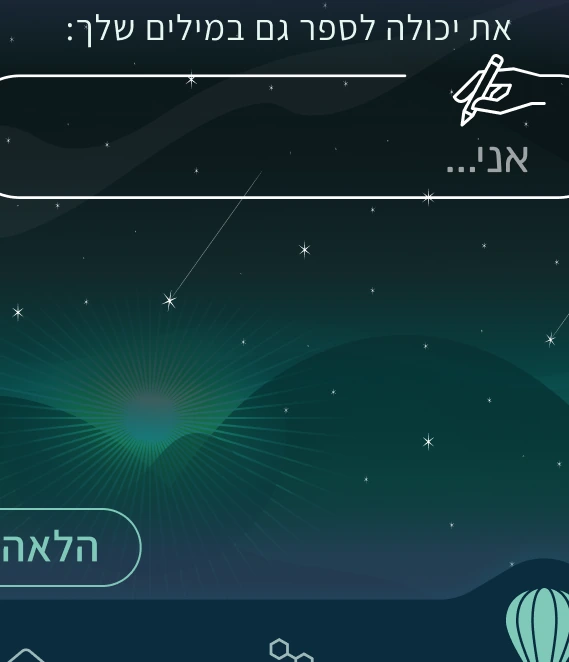
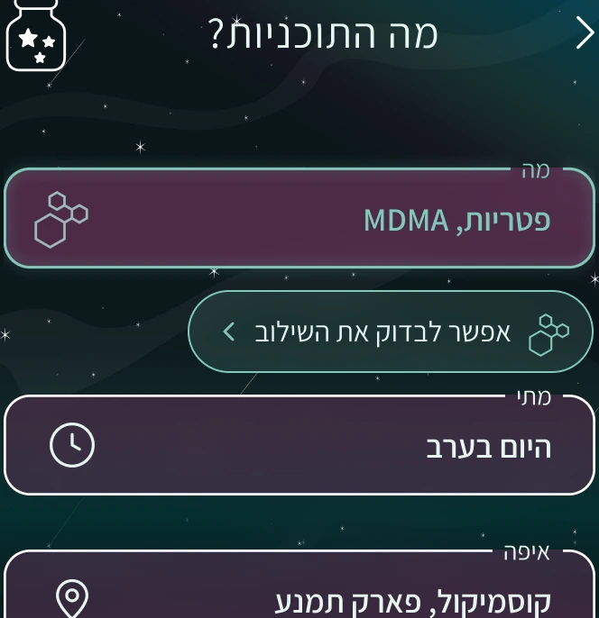
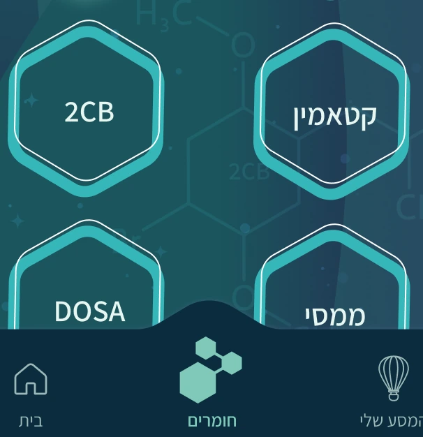
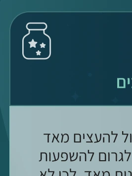
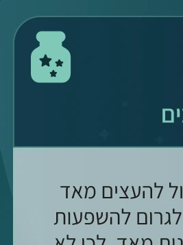
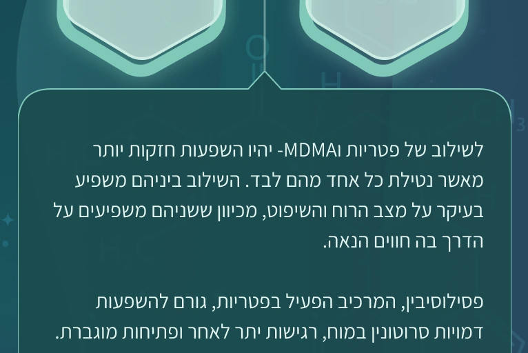

1
Before: check in and plan
Start from how you feel, then set the plan for the journey: what, when and with whom.
Flows 1 and 2
Creator and UX/UI Designer, Just say Know
Just say Know is a Hebrew harm-reduction app for people who use substances. It gives short, judgment-free guidance, written by doctors*, for the time before use, when a good decision is still possible. I created the app and designed it with the Israeli Society of Addiction Medicine (ILSAM). Here it follows the user's journey: checking in, planning, learning about the substances they are taking, and being able to get help while under the influence without any further action.
* The medical texts are written by doctors and approved legally.
The problem
For years, public talk about substance use meant talk about addiction. Schools, organizations and the Ministry of Health all spoke about the danger of becoming addicted, and no one spoke to the one-time or first-time user, whether sixteen or fifty, where the biggest mistakes can happen: they rely on stories they heard, not on an informed choice. Talking openly was not legitimate anyway, and even looking for information felt risky, so what people knew passed through closed groups and word of mouth.
The fear went further than curiosity. Someone who felt unwell at a party could hesitate to go to a hospital, afraid of being reported for breaking the law. Without reliable information, and without a place to ask, people made mistakes that could cost them their health, or their lives.
Things have changed since, but judgment-free information based on evidence, not on someone's experience, is still hard to find in Hebrew. Harm reduction starts from the opposite place: it meets people where they are, without judgment or coercion. The app makes that practical: easy to reach, easy to read, and useful before the journey, not only after it.
Harm reduction: practical strategies and principles that reduce the negative consequences of substance use, while recognizing it as human and as part of many people's lives.
How to prepare better.
The structure
The best way to avoid a bad and dangerous experience is to build knowledge beforehand. Each of the three moments gives the user a piece of it.
1
Start from how you feel, then set the plan for the journey: what, when and with whom.
Flows 1 and 2
2
Short, doctor-written guidance on combinations and on ten rules of thumb, ready before the party.
Flows 3 and 4
3
Set up what helps when a phone is not at hand, so that safe-space staff can find you.
Flow 5
Chapter 1
The app starts with the person: how they feel today, and what they are planning.
Flow 1 · Check-in
"How am I feeling today?"
The journey starts with one short question: how are you today? Knowing how you feel, and asking yourself the right questions first, is where preparing begins. The person can pick one mood or several, and since a list can never hold everything, it also invites them to say it in their own words, which is optional. It sets a calm tone before any information appears, and it starts the app from the person, not from the substance.
Flow 2 · Plan a journey
"What's the plan for this journey?"
Planning is where most of the app's later help comes from. The plan asks four things: what, when, where and with whom, and every one of them is optional. The substances come first, as a set where several can be chosen. When more than one is picked, a soft line says the combination can be checked, and it never blocks the plan. The jar in the top corner holds what the person has saved.
Chapter 2
The mix calculator gives information about a specific combination of substances, and what to keep in mind before and after.
Flow 3 · Mix calculator
"Is it safe to mix these two?"
The calculator opens on every substance a person can ask about, each shown by its name. Pressing and holding one opens that substance's own card. Choosing a second makes a Calculate combination button appear, and one tap on it opens a card with guidance for that pair, for before and after use. Because the guidance covers both sides of the journey, the calculator is also reachable from the plan.
Flow 4 · Ten rules of thumb
"Just the short version, please."
The ten rules of thumb are the app's shortest guidance. Each rule has its own subject and its own icon: the person picks the one they care about, reads a card of a few lines, and can save it to the jar.
Real-time help, planned ahead
At a party, a person may not have a phone within reach, or may not be in a state to work through an app. So the app's real-time help is built the other way around: everything is arranged ahead of time, and in the moment there is almost nothing to operate.
Autopilot works this way too. The user sets a window of time in advance, so that nothing needs doing when it begins. The safe-space profile follows the same rule. A safe space is a staffed, calm area at an event, and its team does not only wait there: they walk around the event looking for anyone who needs help, because someone in need may not be able to come to them. The profile is filled in before the event, so that staff can find the person without the person needing to do anything.
Chapter 3
A safe space is a staffed, calm area at an event, where the team also walks around looking for anyone who needs help. When there is one, the person prepares ahead of time how the team can find them and approach them, without taking out their phone.
Flow 5 · Safe space at an event
"How will they find me?"
The event is chosen in the plan, so this flow starts after it, with the profile that safe-space staff will see. It works as a temporary ID card with one purpose: helping staff find the person and approach them the way they asked. The person fills in details that help staff recognize them, such as what to call them and what they are wearing, and says how they would like to be approached. Once saved, the person appears on the event's map.
The interface
The calm vibe of the app is built from design choices as much as from flows. These are the ones that carry the decisions above.

The app opens into a night sky, with a glow rising behind the hills. The first thing a person meets is calm, not a form, so the question about how they feel can be answered at their own pace.

A deep teal night, soft plum fields, and mint for what is chosen. Even the offer to check a combination wears the same colors as the list around it, so it reads as part of the screen and not as an alarm.

The molecule icon in the tab bar turns into the screen itself: every substance is a soft hexagon, a molecule translated into something rounded that you can tap. The science stays, without a single hard edge.


Saving is a jar of stars, an object from the same night-sky, fairy-tale world as the rest of the app. A plain office-style save icon would break that world and could feel stressful, while a jar that holds stars makes keeping something feel gentle.

The doctors’ text stays exactly as written, on a light, quiet panel that is easy to read, inside the soft frame of the app. It feels like information to rely on, without feeling like an alarm.
More work